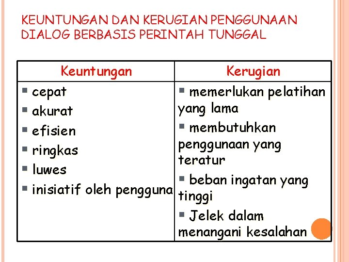
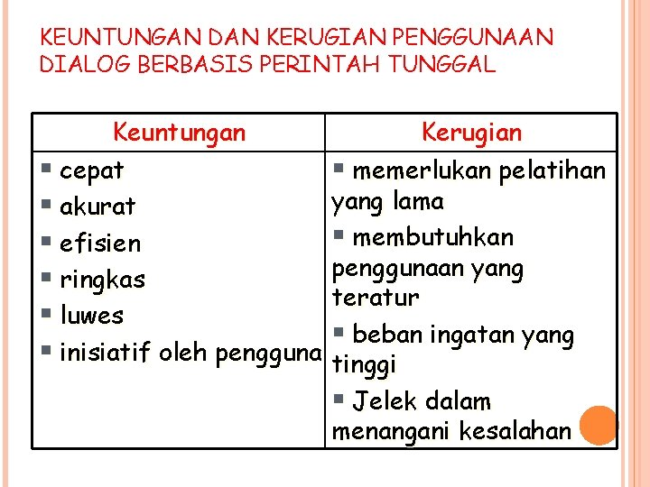

7.1.1 Dialog Berbasis Perintah Perintah Tunggal
Dialog ini merupakan ragam yang paling konvensional. Perintah perintah tunggal yang dapat dioperasikan biasanya tergantung dari sistem komputer yang dipakai, dan berada dalam suatu domain yang disebut bahasa perintah (command language) Contoh sederhana yang sering kita lihat adalah perintah-perintah pada DOS dan LINUX misal: dir, copy, format, deltree, vi, ls, who, passwd, lpr
1. Who adalah perintah yang digunakan untuk menampilkan daftar pengguna yang sedang bekerja pada sistem UNIX yang mana anda termasuk sebagai salah satu penggunannya.
2. lpr adalah perintah yang digunakan untuk mencetak suatu berkas ke printer yang terhubung ke sistem UNIX.
3. passwd adalah perintah yang digunakan untuk mengubah kata kunci pada rekening anda. Pengubahan kata kunci ini perlu sering dilakukan sehingga rekening anda tidak dapat digunakan oleh orang lain tanpa seizin anda.
Jika kita bandingkan perintah perintah tunggal yang ada di dalam DOS dan UNIX, kita dapat melihat bahwa perintah-perintah dalam UNIX. Bagi mereka yang sama-sama sedang belajar kedua sistem operasi ini, perintah-perintah DOS lebih mudah diingat dibanding dengan perintah-perintah dalam UNIX.
Dialog berbasis perintah tunggal mempunya sejumlah keuntungan yang atraktif bagi pengguna ahli, tetapi kadang-kadang sangat menakutkan bagi pengguna yang lain. Selain itu, perlu dilakukan suatu usaha untuk meminimalkan kebutuhan pelatihan dan kesalahan.
Beberappa saran perlu dipertimbangkan untuk meminimalkan beban ingatan dan salah pengetikan, antara lain adalah:
1. Pilihlah kata kunci yang mudah diingat.
2. Gunakan format perintah yang konsisten.
3. Gunakan untaian kata yang pendek.
4. Tambahkan fasilitas bantuan (help).
5. Gunakan nilai-nilai default untuk mengurangi kesalahan ketik.
6. Sediakan pesan-pesan yang jelas jika masih banyak kesalahan yang muncul.
A. Perintah DOS dibagi 2 :
1. Internal Command (tidak memerlukan berkas .EXE dan .COM)
CONTOH :
C : \>DIR → menampilkan nama berkas yang terdapat pada hardisk.
C : \>COPY *.DOC A: \NASKAH → perintah membuat salinan semua berkas berpengenal.DOC dari hardisk C ke disket pada pemutar A dan ditempatkan dalam direktori NASKAH.
2. External Command (memerlukan berkas.EXE dan .COM)
CONTOH :
C : \DOS>FORMAT A: /S → perintah untuk memformat disket pada pemutar A sekaligus menyalin sistem ke dalam disket tsb. Perintah ini memerlukan berkas FORMAT.COM
C : \DOS>DELTREE C : \NASKAH\SOAL → perintah yang digunakan untuk menghapus direktori SOAL yang berada di dalam direktori NASKAH di dalam hardisk C
Perintah ini memerlukan berkas DELTREE.EXE
 

# Keuntungan dan Kerugian
Keuntungan menggunakan dialog berbasis perintah tunggal yaitu:
1. Cepat dan akurat.
2. Efisien dan ringkas
3. Luwes
4. Inisiatif oleh pengguna.
Kerugiannya menggunakan dialog berbasis perintah tunggal yaitu:
1. Memerlukan pelatihan yang lama.
2. Membutuhkan penggunaan yang teratur.
3. Beban ingatan yang tinggi
4. Jelek dalam menangani kesalahan.